Driver App: ачилт, хүргэлт, сав буцаан татах
Зорилго
Нийтэлсэн хүргэлтийн даалгаврын ачилт, хүргэлтийг гүйцэтгэж, сав буцаан татах (Pickup) ажиллагааг дуусгана. Доорх дараалал нь TC-B2C-E2E-001 тестийн үр дүнд тулгуурласан.
Урьдчилсан нөхцөл
B2CVS260922000001 даалгаврыг 1018УБА тээврийн хэрэгсэл, [B2C-DRV05] Мөнхөө жолоочид оноож, нийтэлсэн байна.
Цэсний зам
Driver App → Current; дууссан даалгаврыг шалгахдаа Task List → Completed хэсгийг нээнэ.
Алхамууд
1. Ачилтын цэгт ирэх, ачилт баталгаажуулах
- Current хэсгээс хүргэлтийн даалгаврыг нээнэ.
-
Ачилтын цэг [DEMO-DC01] Demo Distribution Center болон доорх мэдээллийг шалгана.
Талбар Тайлбар Тестийн утга Planned Delivery Points Төлөвлөсөн хүргэлтийн цэгийн тоо 2 Qty / Container Барааны тоо / савны тоо 2 / 0 Volume / Weight Эзлэхүүн / жин 0.03 m³ / 2 kg -
Ачилтын цэгт ирээд Arrival Confirmation үйлдлээр ирснээ баталгаажуулна.
-
Confirm Loading үйлдлээр ачилтыг баталгаажуулна.
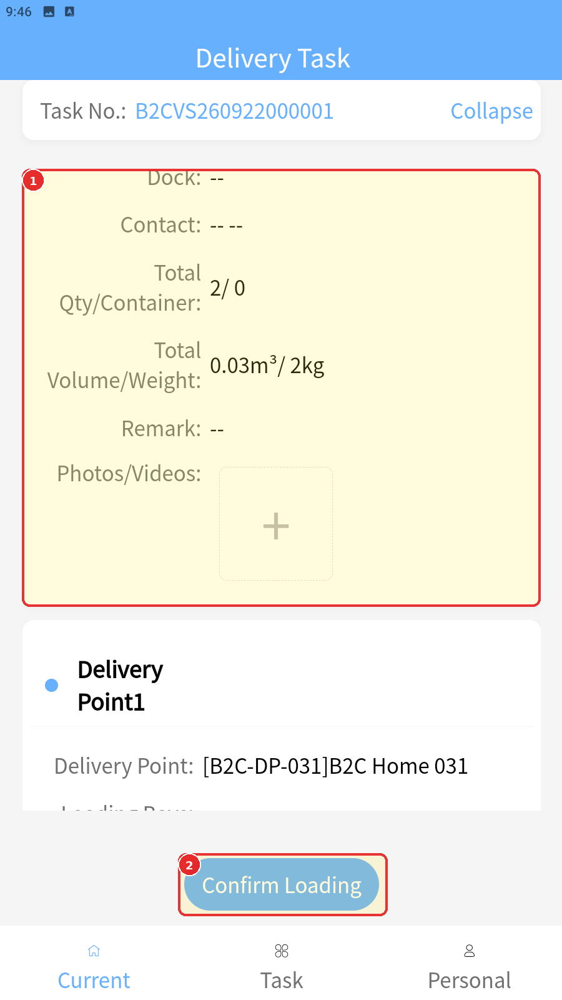
-
Loading Confirmation Signature хэсэгт гарын үсэг зурж, Complete дарна.
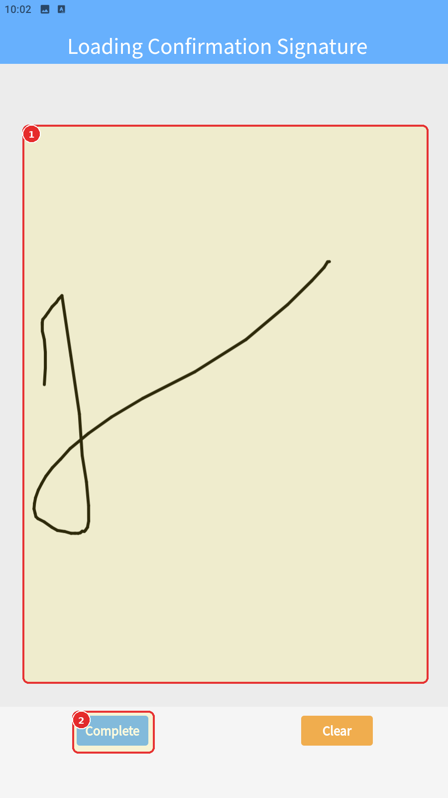
-
Ачилт дууссаны дараа даалгавар Awaiting Delivery төлөвт шилжсэнийг шалгана.
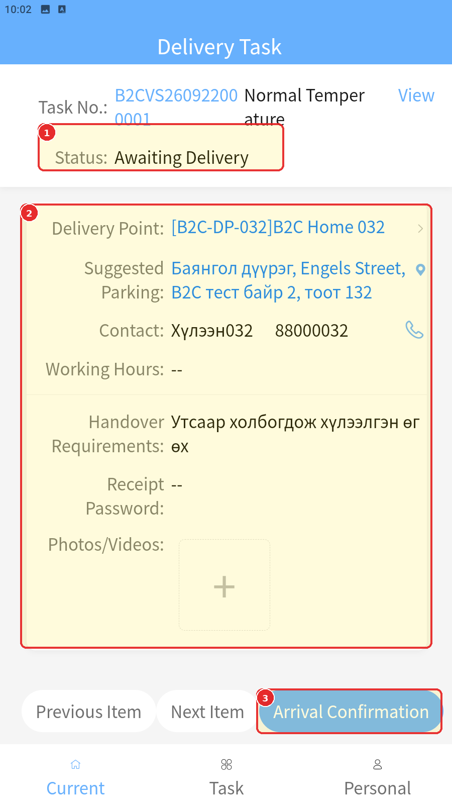
2. Эхний хүргэлтийн цэгт ирэх, сав бүртгэх
- Апп дээр гарсан хүргэлтийн цэгийг шалгана. Тестэд эхлээд [B2C-DP-032] B2C Home 032 гарсан.
- Тухайн цэгт ирээд Arrival Confirmation үйлдэл хийнэ.
-
Сав буцаан татах бүртгэл хийхдээ Pickup Registration үйлдлийг ашиглана.
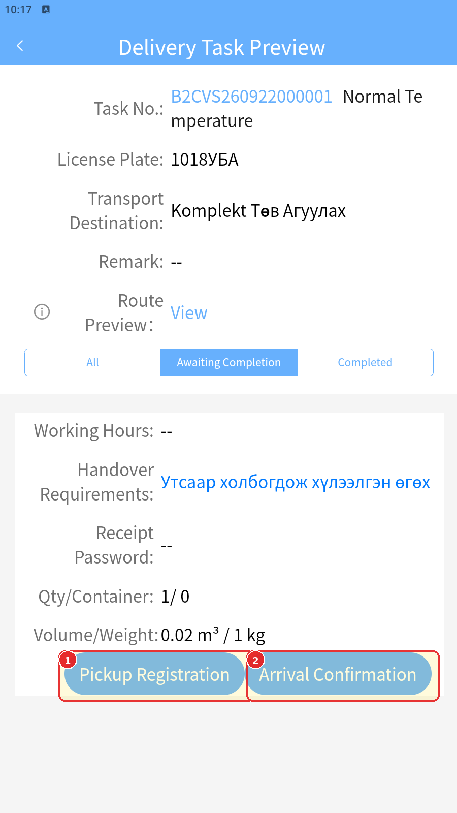
-
Tote Box мөрийн тооны талбарт 1 оруулж, Submit дарна.
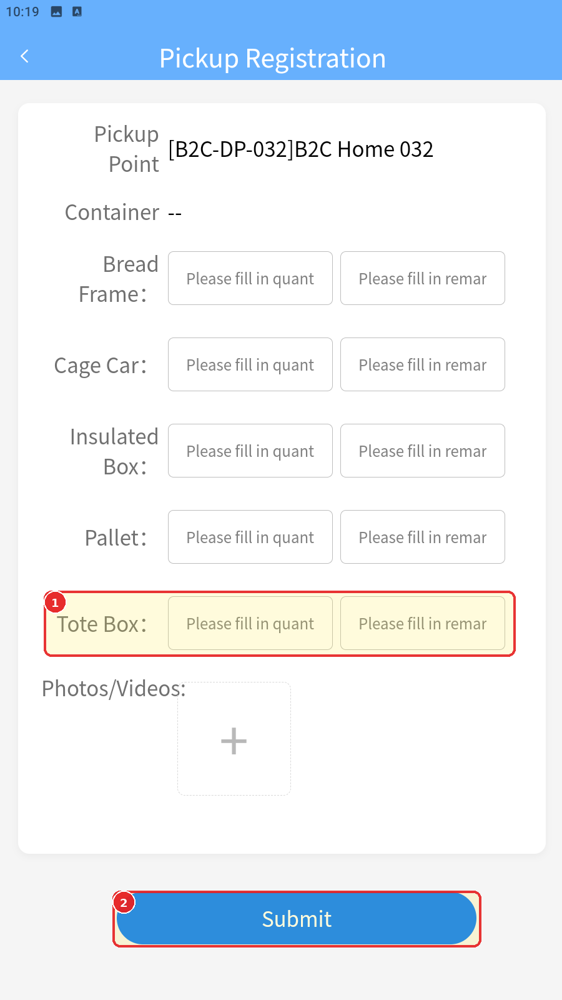
Зурагт бөглөхийн өмнөх маягт харагдана. 1 гэсэн утга энэ зурагт ороогүй; тестэд бүртгэсэн нэг савыг Web-ийн дууссан захиалгаар шалгана.
Бүртгэлийн дараах дэлгэцэд Pickup Cancel, Pickup Registration, Arrival Confirmation харагдаж байгааг шалгана.
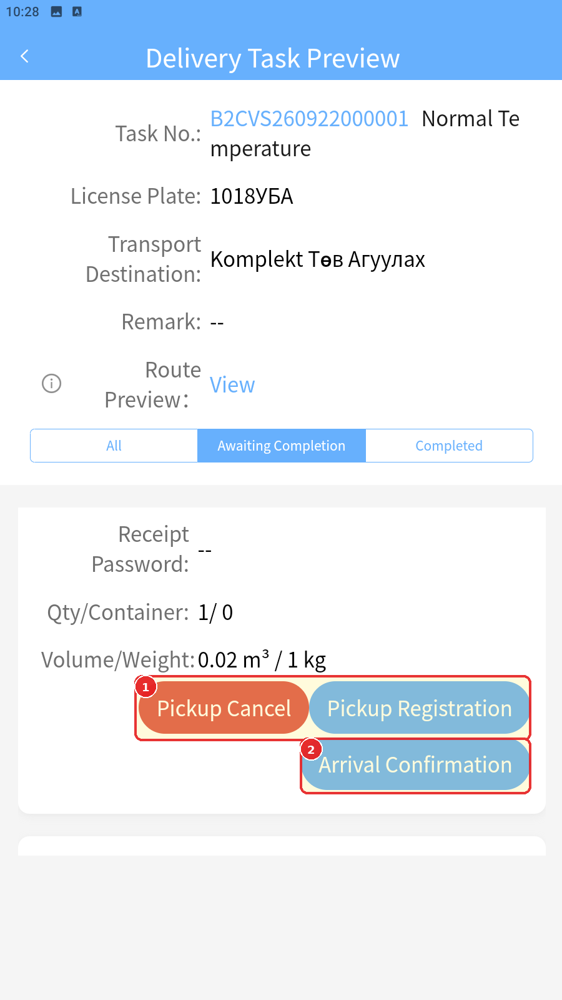
Туршилтын үед ажиглагдсан: Өмнөх тестийн тайлбарт Arrival Confirmation-ийн дараа сав бүртгэсэн гэж тэмдэглэсэн боловч 07 болон 09 зурагт энэ товч харагдсан хэвээр байна. Дэлгэцүүдийн дарааллаас шинэ нөхцөл, дүрэм дүгнэхгүй. Pickup Cancel харагдсан нь цуцлах ажиллагааг тестэлсэн гэсэн үг биш.
Бүртгэлийн дараа Web TMS дээр B2CPG260922000001 буцаан татах захиалга (Pickup Order) автоматаар үүссэн гэж тестийн эх сурвалжид тэмдэглэсэн.
| Мэдээлэл | Тестийн утга |
|---|---|
| Pickup point | [B2C-DP-032] B2C Home 032 |
| Delivery destination | [DEMO-DC01] Demo Distribution Center |
| Product quantity | 0 |
| Weight | 0 |
| Volume | 0 |
| Container | 1 |
3. Хүргэлтийн цэгүүдийг дуусгах
-
DP-032 дээр Delivery Completed үйлдэл хийнэ. Тестэд Pickup Registration нь үндсэн хүргэлтийн даалгаврыг үргэлжлүүлэхэд саад болоогүй.
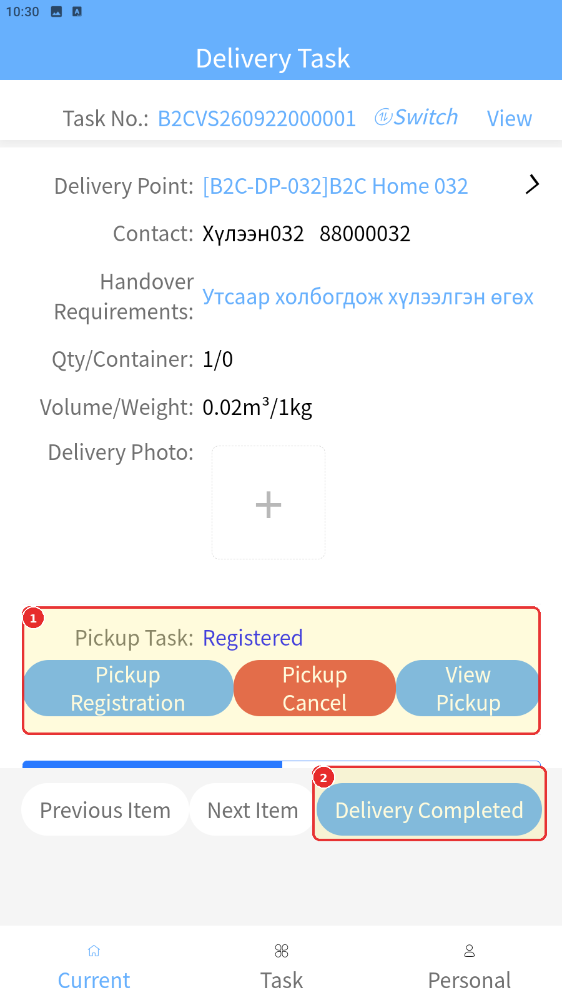
1-р хүрээнд Pickup Task: Registered, 2-р хүрээнд Delivery Completed товч байна. Энэ нь хүргэлтийг дуусгахаас өмнөх дэлгэц.
-
Дараагийн хүргэлтийн цэг [B2C-DP-031] B2C Home 031 автоматаар гарсныг шалгана.
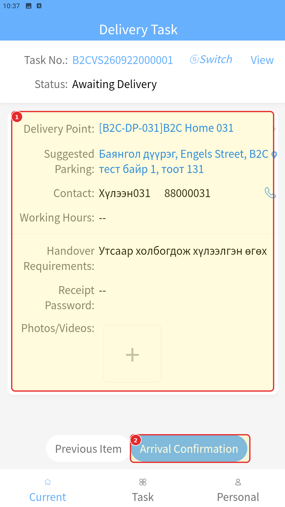
-
DP-031 дээр Arrival Confirmation, дараа нь Delivery Completed үйлдэл хийнэ.
- Хоёр цэгийн хүргэлт дууссаны дараа B2CVS260922000001 даалгавар Completed төлөвтэй болсныг шалгана.
4. Сав буцаан татах даалгаврыг дуусгах
- Бүх хүргэлтийн цэг дууссаны дараа автоматаар гарсан тусдаа B2CPT260922000001 буцаан татах даалгаврыг (Pickup Task) нээнэ.
- Pickup points = 1, Qty / Container = 0 / 1, очих газар Demo Distribution Center эсэхийг шалгана.
-
Савыг очих газарт хүргээд Delivery Confirmation үйлдэл хийнэ.
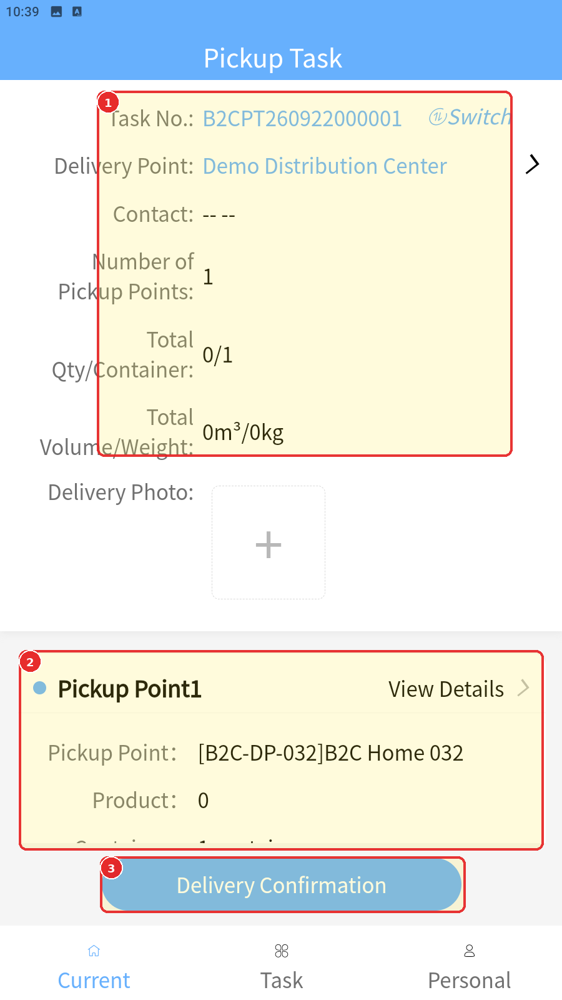
Зураг дээрх тэмдэглэгээ: 1 — даалгаврын дугаар, очих газар, нийт Qty / Container = 0 / 1; 2 — DP-032 татан авах цэг; 3 — Delivery Confirmation. Дууссан үр дүнг дараах Completed жагсаалтаас шалгана.
-
Буцаан татах даалгавар Completed төлөвт шилжсэнийг шалгана.
5. Web захиалга болон дууссан даалгавруудыг шалгах
-
Web TMS дээр B2CPG260922000001 Pickup Order-ийг шалгана.
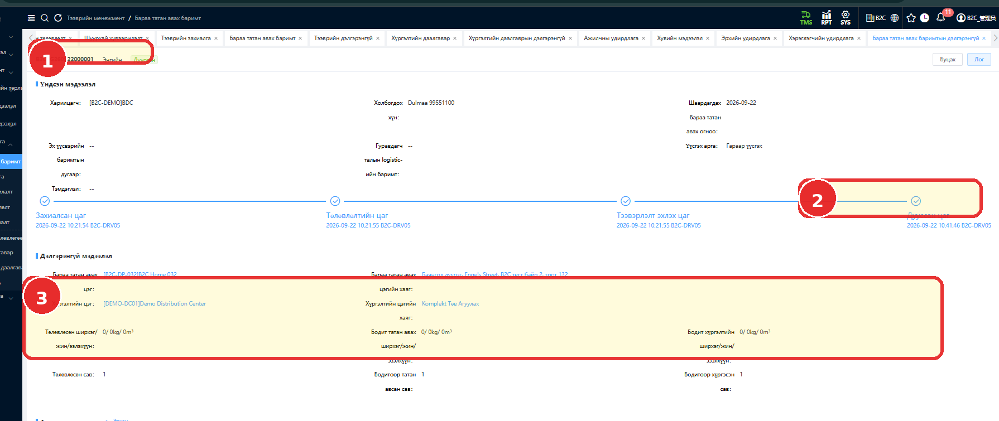
Зураг дээрх тэмдэглэгээ: 1 — Дууссан төлөв; 2 — дууссан цаг; 3 — тоо, жин, эзлэхүүний хэсэг. Төлөвлөсөн, татан авсан, хүргэсэн савны 1 / 1 / 1 утгууд 3-р хүрээний доорх мөрөнд харагдана.
Туршилтын үед ажиглагдсан: Тестийн тайлбарт захиалга автоматаар үүссэн гэж тэмдэглэсэн боловч энэ зурагт “Үүсгэх арга: Гараар үүсгэх” гэж харагдана. Үүсэх механизмыг зөвхөн энэ талбараас дүгнэхгүй.
Талбар Тестийн үр дүн Planned container 1 Actual picked up container 1 Actual delivered container 1 Status Completed -
Driver App → Task List → Completed хэсэгт дараах хоёр даалгавар тусдаа харагдаж байгааг шалгана.
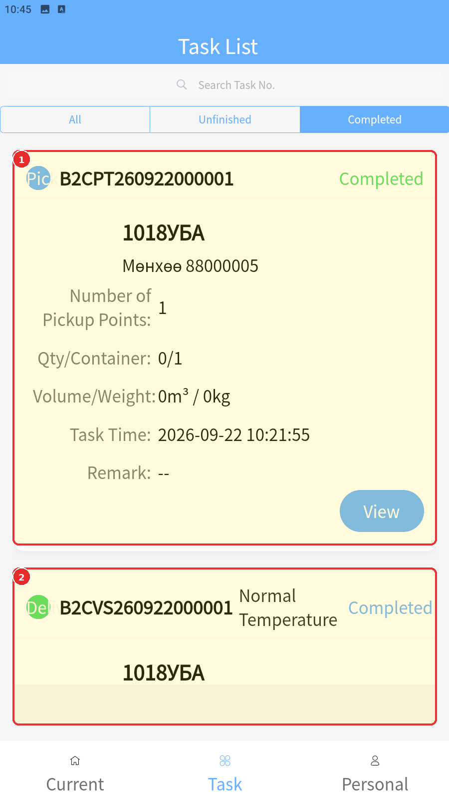
Даалгаврын дугаар Төрөл Төлөв B2CPT260922000001 Pickup Task Completed B2CVS260922000001 Delivery Task Completed
Хүлээгдэж буй үр дүн
Хүргэлтийн даалгавар, буцаан татах даалгавар болон буцаан татах захиалга Completed төлөвтэй байна. Нэг сав төлөвлөж, нэг сав татан авч, нэг сав хүргэсэн байна.
Дараагийн шалгалт: Store App-ийн хүлээн авалт ба үнэлгээ.
Анхаарах зүйл
Энэ тестийн Pickup нь сав буцаан татах ажиллагаа. Бараа буцаах ажиллагааг тестлээгүй.
Тестэд DP-032 → DP-031 дарааллаар хүргэлт гүйцэтгэсэн. Төлөвлөлтийн дараалалтай ялгаатай харагдсан ажиглалтыг бүх даалгаварт үйлчлэх дүрэм гэж тайлбарлахгүй.
Туршилтын үр дүнд бодит явсан зай 0 km хэвээр бүртгэгдсэн. Шалтгааныг энэ тестээр тогтоогоогүй.